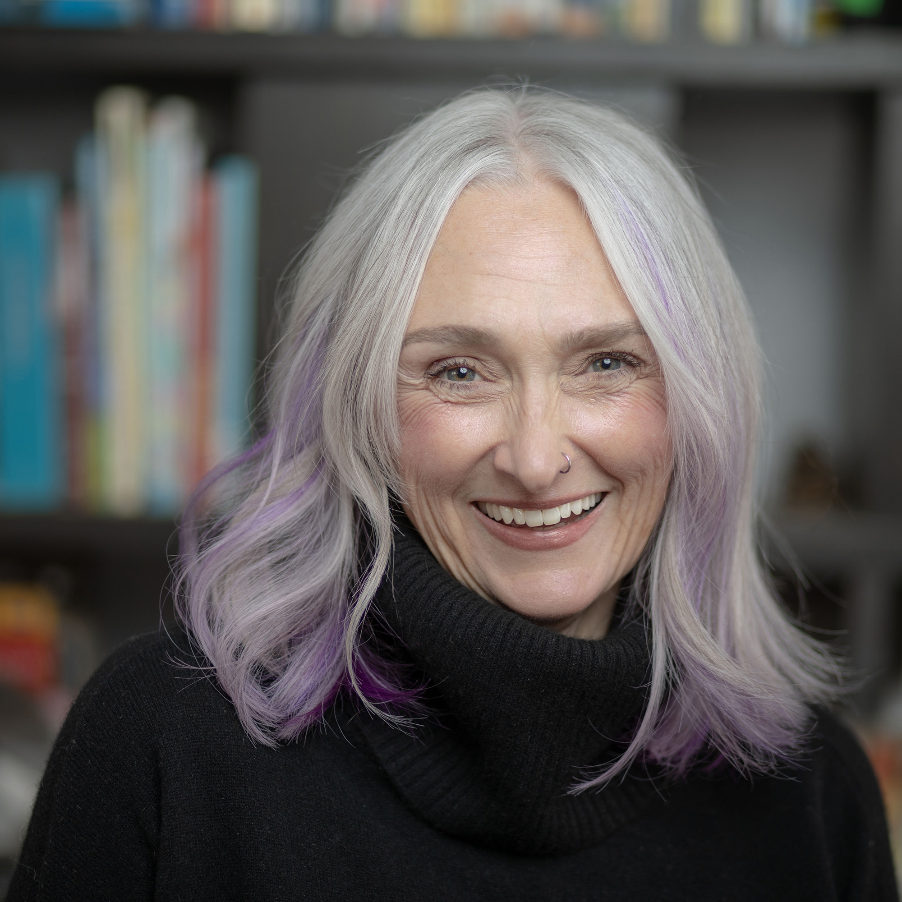

The 2026 AI Summit at Mesa Community College brings together faculty, staff, and administrators from across the Maricopa district and beyond for a full day of sessions exploring generative AI in higher education. The theme, "Into the Digital Wild," reflects the spirit of the event: curiosity, experimentation, and honest reflection on how AI is changing teaching and learning.
Sessions span teaching and learning, ethics, policy, student engagement, and hands-on activities. No prior AI expertise required.
Building Career Tools That Outlast the Semester
Abstract
What happens to student work when Canvas access ends? Resumes, job research, interview prep, networking notes: gone. For community college students navigating financial pressure and an overwhelming job market, that gap between coursework and career readiness is a real institutional problem.
This session introduces Render, an AI-powered career dashboard built with Claude (Anthropic) for Digital Media Arts students at Glendale Community College, designed to bridge course competencies in AVC 248 (Design Self Promotion) with the career support students need after graduation. The tool guides students through seven structured areas: setting goals tied to a target job market, logging and analyzing job descriptions, drafting and revising resumes, identifying skills gaps, tracking networking contacts, practicing interview responses, and generating a personalized launch plan for the weeks after graduation.
What makes Render different from assigning AI use is structure and purpose. Each section uses AI to respond to what the student has already built: their goals, their saved jobs, their actual skills. No blank prompt required. And when a student saves a job listing, an anonymized summary is shared with GCC Career Services, giving the college visibility into which employers students are pursuing and a basis for building internship relationships. Render is currently a working prototype, with a student pilot planned for Fall 2026.
Attendees will see the tool in action and leave with ideas for how a structured, student-centered AI tool can connect coursework to career outcomes and student services across any discipline. No AI experience required.
Learning Outcomes
- Distinguish between assigning AI use and designing AI tools around student needs, and articulate why that distinction matters for student agency and engagement
- Identify at least one way a structured AI tool in their own discipline could connect coursework to student services or post-graduation outcomes
- Describe how AI can be used to personalize career development support without requiring students to construct prompts from scratch
- Recognize the potential for student-generated data, collected with transparency and consent, to strengthen the relationship between academic programs and campus career services
Session Details
Live demo + Q&A
Claude (Anthropic) · singletrackmom.github.io/render
DMA Faculty, GCC
No AI experience required

Michelle Blomberg
Residential Faculty, Digital Media Arts · Glendale Community College
Michelle Blomberg is Residential Faculty in Digital Media Arts at Glendale Community College, where she has taught graphic design, UX, and career readiness, internships, and experiential learning for decades. Her background includes software product management at an EdTech startup, instructional technology leadership at GCC and the University of Michigan, and decades of course design in higher education. Her 2017 MEd research in connectivism and personal learning environments is the theoretical foundation for both Cultivate, a faculty professional development system, and Render, the student career dashboard featured in this session. She is currently proposing a campus AI Advisory Committee at GCC and building AI-integrated curricula across the Digital Media Arts program. She believes students deserve structured AI tools, not just permission to use them.